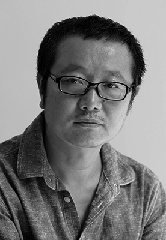

CIXIN LIU is the People’s Republic of China’s leading Science Fiction writer. He has won the China Galaxy Science Fiction Award nine times and the Nebula (Xingyun) award twice. Before becoming a writer, he was a computer engineer in a power plant in Yangquan.